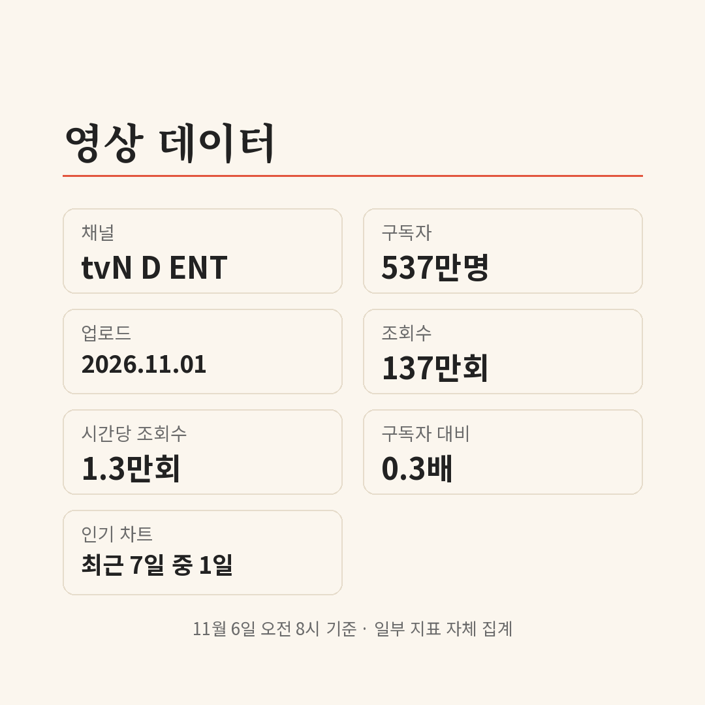

컷 소리가 나자 박수가 터지는 장면 하나가 303만 회. 구독자 1.8만 명 채널에 10월 26일 올라온 '100일의 거짓말' 촬영 비하인드 쇼츠예요. 요즘 쇼츠 피드에 김유정·박진영 장면이 자주 보인다면, 이 드라마 클립이 여러 채널로 퍼지고 있기 때문이에요.
📷 사진 1 자리
김유정·박진영의 경성 첩보 로맨스
'100일의 거짓말'은 tvN 20주년 특별기획 토일드라마예요. 김유정은 조선총독부에 통역생 '금서희'로 위장해 들어간 이가경을, 박진영은 엘리트 통역관 김태웅이자 사토 히데오를 맡았어요. 김현주, 이무생, 진선규도 함께 나와요.
드라마 쪽 숫자도 있어요. 굿데이터코퍼레이션 펀덱스 TV-OTT 통합 화제성에서 2주 연속 1위에 올랐어요.
비하인드 쇼츠가 먼저, 공식 클립은 그다음
11월 6일 오전 8시 기준으로 이 드라마와 관련해 모인 영상을 날짜순으로 놓으면 흐름이 보여요. 먼저 퍼진 건 촬영장 비하인드였어요. 10월 26일 '컷 소리와 함께 터져 나오는 박수' 303만 회, 다음 날 '컷 사인 나면 더 달달해진다는' 박진영·김유정 영상 275만 회가 올라왔어요.
방송 장면 클립은 그 뒤예요. 10월 31일 7화 장면 쇼츠가 113만 회, 11월 2일 공주님 안기 비하인드가 179만 회를 찍었어요. 이 영상들은 모두 구독자 1.8만~17만 명 채널에 올라왔고, 자체 집계로 구독자 대비 조회수가 16.2~167.3배예요. 드라마를 따라 한 패러디 쇼츠도 102만 회까지 갔어요.
tvN 공식 클립은 11월 1일에 나왔어요. tvN D ENT의 통역 장면 클립이 137만 회, tvN DRAMA의 김태웅 클립이 95만 회예요. 공식 채널은 구독자가 537만·749만 명이라 구독자 대비로는 0.3배, 0.1배에 그쳐요.
공식 채널에서 볼 수 있는 3편
첫 번째는 가경이 통역을 하다 벌어지는 장면이에요. 제목에 '통역 대참사'가 붙은 클립으로, 공식 클립 중 조회수가 가장 높아요.
▶ 영상 1 자리
두 번째는 태웅의 '심장'을 다룬 짧은 클립이에요. 상위 댓글 100개를 세어 보면 '연기'가 들어간 댓글이 17개, '표정'이 7개였어요. 첫 번째 클립에서는 '가경'이 14개로 가장 많았어요.
▶ 영상 2 자리
세 번째는 11월 3일 tvN DRAMA가 올린 스페셜 선공개예요. 김현주가 구국단의 운명이 걸린 작전을 꺼내는 장면으로, 후반부의 큰 줄기인 구국단 거사와 이어져요.
▶ 영상 3 자리
✍️ 내 경험 자리 — 직접 보고·듣고 느낀 점 3~5문장으로 바꿔 주세요 (네이버 D.I.A.는 경험이 담긴 글을 우대하고, 경험 없는 글은 검색에서 밀릴 수 있어요)
쇼츠로 먼저 퍼진 건 촬영 비하인드였고, 본편 장면은 tvN 공식 클립 3편으로 볼 수 있어요. '100일의 거짓말'은 매주 토·일요일 밤 9시 10분 tvN에서 방송되고 TVING에서도 볼 수 있으며, 7일 9회부터 후반부에 들어가요.
